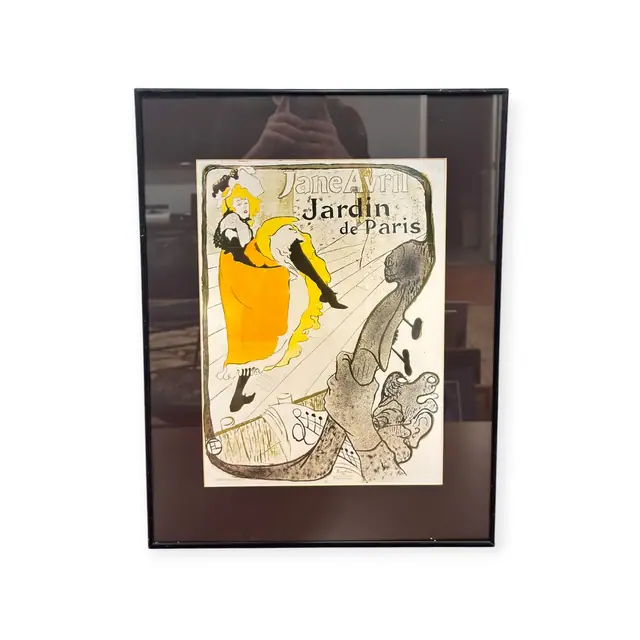
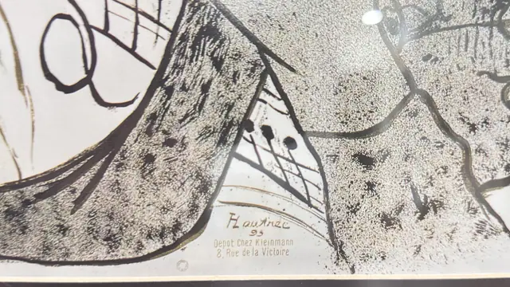
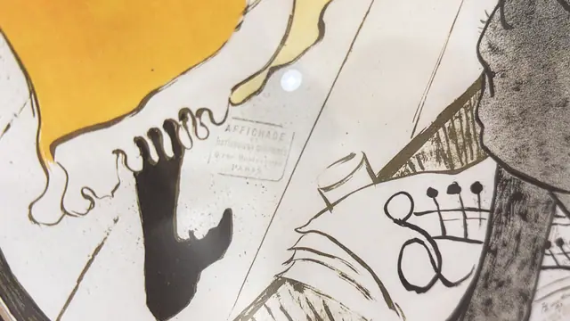

Paintings & Prints
Jane Avril Jardin de Paris Poster, HLautrec, Signed, Framed, 1893
HLautrec · design 1893; this impression later 20th century
Price Upon Request



About the Item
HLautrec. The famous Montmartre cabaret design: Jane Avril in a yellow-gold skirt and black stockings raises one leg on a raked stage, her figure outlined in a single sinuous black contour. The whole composition is enclosed by the scrolling brown-grey neck of a double bass and the player's spread hand, which forms a repoussoir arch at the right. Lettering in black brush script reads 'Jane Avril' across the top with 'Jardin de Paris' beneath. Flat yellow, warm cream, black and a soft stippled grey (crachis spatter) carry the whole image, printed on a white sheet. Medium: colour lithograph poster (later printing or reproduction). Signed lower centre, printed within the design, reading "HLautrec 93". Inscribed on the reverse or mount: Jane Avril; Jardin de Paris; HLautrec 93; Depot Chez Kleinmann. Condition: Reflections and a photographer reflection on the glass obscure parts of the sheet. No tears, foxing or losses visible from these images.
Details
- Creator:
- HLautrec
- Creation Year:
- design 1893; this impression later 20th century
- Dimensions:
- Height: 22.0 in (55.88 cm)
Width: 17.0 in (43.18 cm)
outside of frame - Medium:
- colour lithograph poster (later printing or reproduction)
- Period:
- 19Th
- Condition:
- Offered in the condition shown in the photographs.
- Reference Number:
- VO-83
- Documentation:
- no certificate photographed
- Gallery Location:
- Jane Avril; Jardin de Paris; HLautrec 93